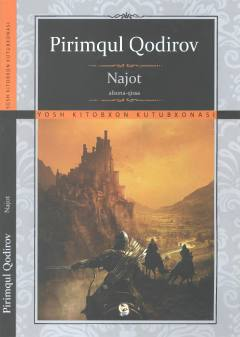

NYaxshilik va insoniy fazilatlar ulug'langan ta'sirli afsona-qissa.
Pirimqul Qodirovning ushbu afsona-qissasi insoniylik, yaxshilik va uning hayotdagi o'rni haqida hikoya qiladi. Asarda xalq manfaatini o'ylab, o'z jonini fido etishga tayyor bo'lgan mard o'g'lonlar va ularning jasorati ulug'lanadi.